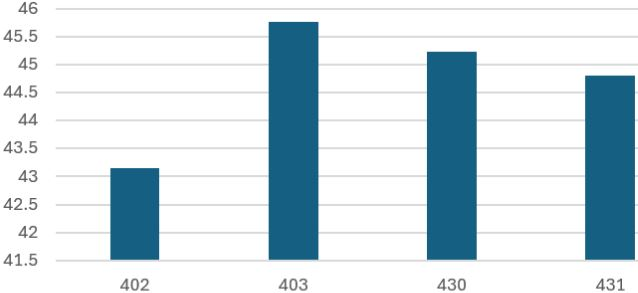
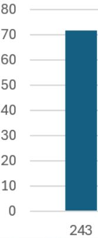
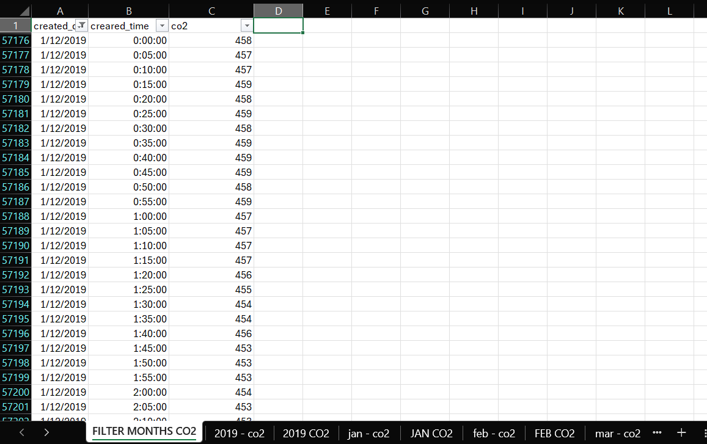
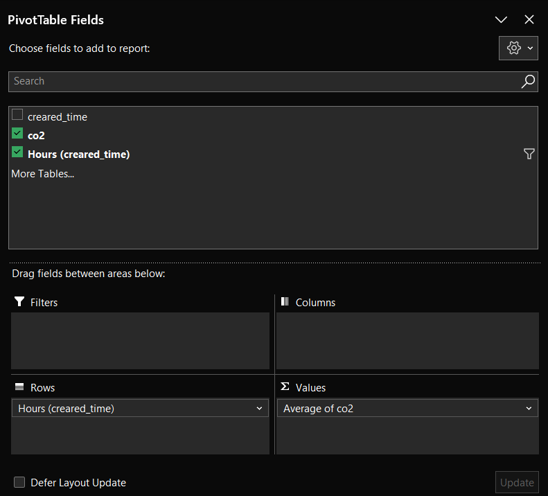
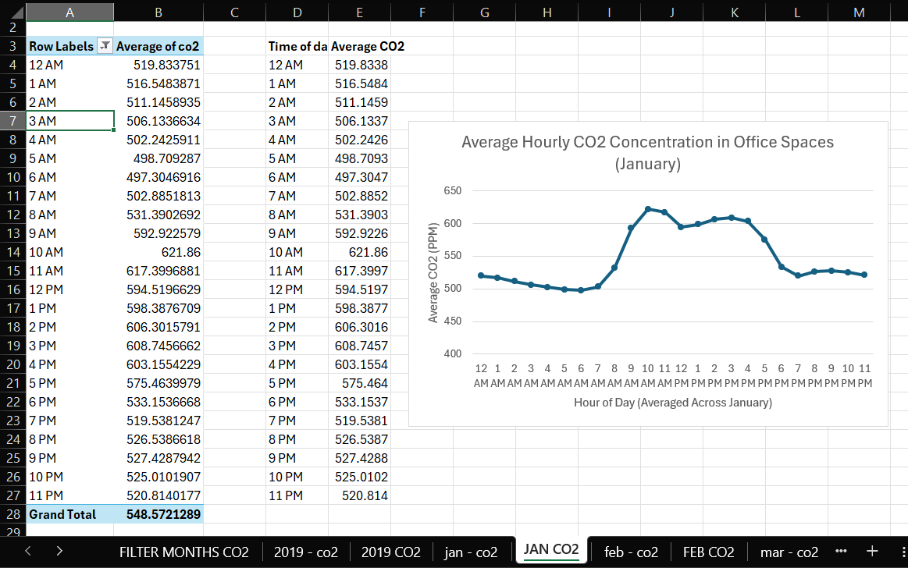
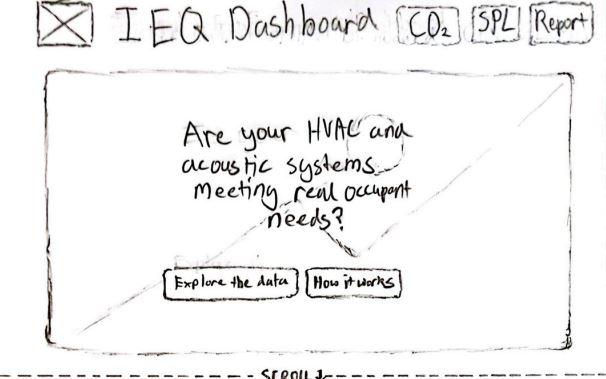
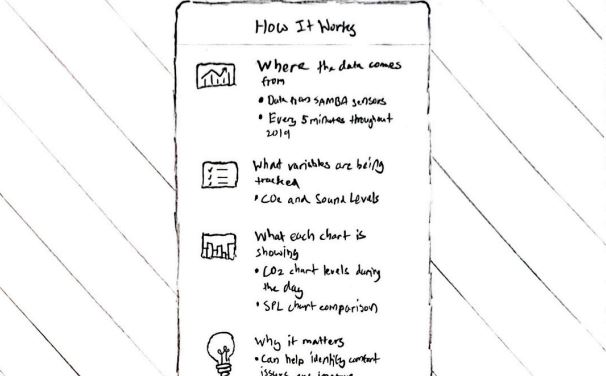
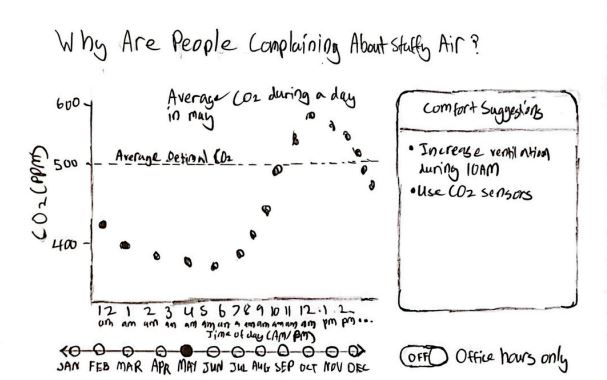
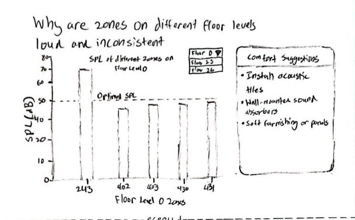
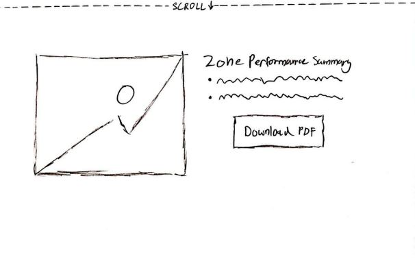

IEQ Dashboard
Empower your facilities team with live, interactive insights on air quality and noise – all in one intuitive dashboard

Empower your facilities team with live, interactive insights on air quality and noise – all in one intuitive dashboard
Facility managers often lack real-time, actionable insights into indoor office comfort, resulting in inefficient building management. Static HVAC schedules fail to adjust to actual occupancy, causing CO₂ spikes during peak office hours and leading to discomfort, complaints, and wasted energy.
Additionally, sound pressure levels vary significantly across zones, with some areas experiencing excessive noise that disrupts focus and productivity.
There is a need for data-driven tools that enable facility managers to proactively address air quality and noise issues, helping to improve occupant comfort and reduce operational inefficiencies.
A multi-method approach to uncover insights about how building occupants and facility managers experience and respond to indoor environmental quality data.
These guiding questions shaped our investigation into how building stakeholders engage with indoor environmental quality data and what design interventions can enhance comfort and operational efficiency:
Working with real sensor data from the IEQ Lab's SAMBA system
Our dashboard visualizes data from a network of sensors monitoring a real office building throughout 2019, capturing the complex interplay of environmental factors that shape our indoor experiences.
The SAMBA system tracked 10 key variables every 5 minutes across multiple floors and zones, creating a rich dataset of over 2.6 million data points.
Buildings account for nearly 40% of global energy consumption, yet many fail to provide basic comfort. By visualizing this data, we reveal patterns that can help optimize both occupant experience and energy efficiency.
Your office breathes with its occupants. Like a living organism, CO₂ levels rise and fall with the rhythm of the workday. During morning surges (9–12PM) and afternoon waves (1–3PM), concentrations swell to 575ppm—a 28% respiratory spike from the resting rate of ~450ppm.
Your HVAC operates like a metronome—steady, unchanging—while your office breathes like a marathon runner. This mismatch wastes 20–30% in energy while leaving employees gasping for cognitive clarity.
.JPG)
High or inconsistent CO₂ levels lead to more complaints, prompting frequent manual HVAC adjustments that waste energy and strain systems.
"Frequent manual adjustments reduce HVAC efficiency and waste energy."
Employees feel "stuffy air" and complain when CO₂ levels rise, leading to discomfort and cognitive performance declines of 2-5%.
"Without data-driven adjustments, you're either over-ventilating empty spaces or under-ventilating crowded ones."
Smart, occupancy-based controls could cut HVAC energy use by up to 10% while improving comfort, according to ENERGY STAR guidelines.
"Proper scheduling and smart thermostats can dramatically improve efficiency."
Your office's soundscape tells a story of uneven comfort. While most zones on Floor 0 maintain optimal sound levels (~50dB), Zone 243 screams with disruptive noise at 72dB—1.44× louder than recommended levels, creating an acoustic minefield for productivity.

These zones maintain the University of Arizona's recommended sound levels for productive workspaces.

This outlier zone operates at 1.44× recommended levels, creating cognitive interference equivalent to constant office chatter.
"The University of Arizona research shows sound levels above 50dB significantly impact cognitive performance and employee comfort."
Optimizing HVAC systems to reduce workplace noise is essential, not only for maintaining thermal comfort, but also for minimizing distractions, fatigue, and stress among occupants.
"Workplace noise affects concentration and can lead to greater fatigue and stress, as NIOSH points out. Effective noise control can help mitigate these issues."
Ensuring HVAC systems don’t add to high office noise levels is crucial, as prolonged exposure can cause fatigue and even hearing loss, making noise control vital for workplace management.
"High noise levels can cause fatigue and hearing loss, as noted by OSHA, making effective noise control an important part of office management."
Following WELL guidelines by controlling HVAC noise is essential, since poor acoustics can cause discomfort and distraction in office environments.
"WELL guidelines emphasize the importance of controlling noise levels, noting that poor acoustics can lead to discomfort and distraction in office environments."

Extracted only essential columns from the massive SAMBA dataset:
Created new sheet 'FILTER MONTHS CO2' with Excel filters to isolate specific months.

Filtered for target month (e.g. January) and copied to new sheet 'jan - co2' containing:
This created a clean dataset of all January readings for further analysis.


The output provides clean, hourly average CO₂ levels across the entire month, revealing:
This meticulous cleaning transformed millions of raw sensor readings into clear temporal patterns, enabling precise identification of ventilation needs and energy waste opportunities.
Before digital prototyping, our team produced a suite of hand-drawn low-fidelity sketches to map out the dashboard’s information flow, visual hierarchy, and interactive elements. These sketches illustrate the envisioned experience for facility managers, highlighting key insights, data transparency, and actionable suggestions.





Validate whether the IEQ Dashboard clearly communicates indoor environmental quality data and empowers facility managers to take action through:
15 young adults (facility managers and building operations students)
Verbal commentary while completing tasks
Against Nielsen's 10 usability principles
Interpret CO₂ spike and describe management response
Address sound pressure warning in Zone 243
Explore dashboard features (selectors, overlays)
"Um, okay, so that CO₂ spike after 9am... that's, like, when everyone rocks up, right? We probably need to kick the AC on sooner."
"Zone 243's way too loud, yeah, that's gotta be by the break room. I'd slap some panels up or tell people to chill."
"Oh, I didn't see the month picker at first, but now it's right there. The tips on the side are actually helpful, not just fluff."
| Participant | Task | Heuristic Violated | Usability Issue | Recommendation | Severity |
|---|---|---|---|---|---|
| 1 | Interpret CO₂ spike |
H1 Visibility of system status |
User wasn’t sure if the dashboard shows if HVAC adjusts automatically. | Add clearer links from spikes to system action/ventilation status. | 2 |
| 1 | Sound warning |
H2 Match between system & real world |
Unsure if warning is for equipment or people; action unclear. | Suggest specific causes or actions for noise warnings. | 2 |
| 1 | Dashboard features |
H6 Recognition rather than recall |
Month selector was initially missed. | Make selectors always visible and labeled. | 2 |
Iterative testing transformed the dashboard from a technical prototype to an intuitive tool that:
Our dashboard’s core visualizations transform complex IEQ data into actionable insights through intuitive charts. These tools help facility managers make data-driven decisions about building operations.


CO₂ patterns inform optimal ventilation schedules, reducing energy waste by 20–30% during low-occupancy periods.
Prioritize soundproofing investments in outlier zones like 243 (44% above recommended levels).
Track improvements after implementing changes through monthly comparisons.
Visualizations adapt seamlessly from desktop to mobile while maintaining readability.
Hover tools, filtering controls, and animated transitions enhance usability.
Strategic use of color and layout directs attention to key insights.
AI played a supporting role in this project's development, primarily through:
AI-Assisted: Proper ARIA implementation for screen readers
AI-Assisted: Preventing performance lag during window resizing
AI-Assisted: Universal tooltip interaction patterns
Used for specific technical questions and best practice validation
All AI suggestions were reviewed and adapted to project needs
All AI contributions are explicitly commented in source code
The full documentation of AI-assisted implementations, including prompt history and code comments, is available in the project appendix.